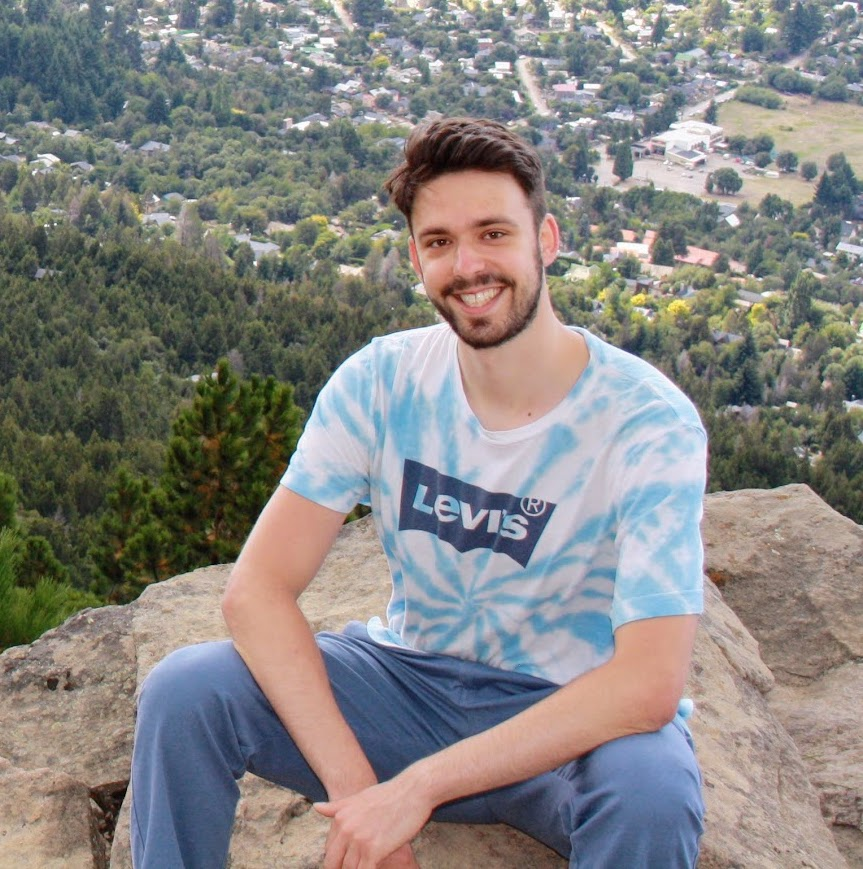

Jacob Arbeid
Building AI Security
I'm a researcher and operator who cares a lot about reducing extreme risks from advanced AI systems.
Currently: Building a new research organisation to assess and mitigate catastrophic AI cyber threats, generously funded by ACX.
Previously:
- 2023-2026: Building AI evaluation programmes & national security engagement @ the AI Security Institute
- 2021-2023: Ran AI governance research and policy programmes @ the Simon Institute for Longterm Governance
- 2017-2021: Student @ Cambridge University, but spent a lot of my time building a fundraising movement that's raised >$750k
My contact details are below - reach out if you're a security researcher or want to build in AI safety and security.
Work
Scaling difficult cyber range environments
Built a pipeline to scale the creation of difficult end-to-end cyber evaluations with simulated defences. First range was produced in 1 week, took >6 hours for a human expert to solve. (with Zac Saber)
Read →
Pre-deployment model evaluations
I led teams running several AI model testing exercises pre-deployment. We predominantly tested models for risky autonomous capabilities.
Example →
Eval task standard
Standardised framework for long-horizon evaluation tasks in Inspect (with Sid Black and others)
Read →
Task bounty
I ran a bounty programme for tasks and control settings that measure AI capabilities in deception, jailbreaks, steganographic reasoning, and self-replication. Ultimately grew to nearly 200 researchers contributing >150 tasks (with Jasmine Wang and others).
Read →
Sandbagging research
Measuring if AIs are capable of strategically concealing risky capabilities. With Jacob Merizian and others.
Read →
Blog
Occasional notes on AI Safety and Security
Read on Substack →